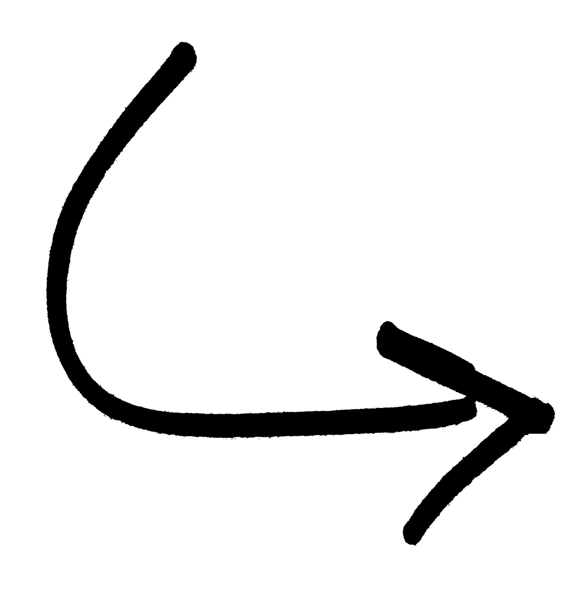
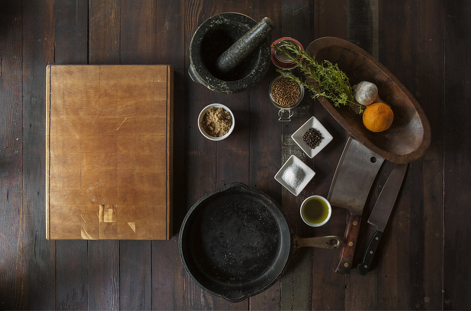

About me
Entries
Sources
CODE BIBLIOGRAPHY
Here lies:
A collection of where I got my images and infromation from, date included
IMAGES AND ASSETS
Banner of homepage: flickr.com (27.09.24)
Photographed by Elliot Brown, 2014
Banner of subpages: flickr.com (01.10.24)
Photographed by William Murphy, 2011

Capricorn arrow: freeiconspng.com (30.09.24)
Created by Ahkâm, 2014
Big Fish in "Entries": flickr.com (01.10.24)
Photographed by Matt Kieffer, 2018
Stew: flickr.com (02.10.24)
Photographed by Jeffrey, 2013
Elk: wikimedia.com (10.10.24)
Uploaded by Franco Atirador, 2007
Big Fish 2: flickr.com (30.09.24)
Photographed by William Murphy, 2011

Kitchen: flickr.com (10.10.24)
Photographed by Image Catalog, 2014
Soda bread: flickr.com (10.10.24)
Photographed by slgckgc, 2011
SALMON OF KNOWLEDGE
artuk.org (03.10.24)
treesforlife.org (03.10.24)
ancienttexts.org (03.10.24)
SODA BREAD
allrecipes.com (10.10.24)
sodabread.info (10.10.24)
STEW
thespruceeats.com (10.10.24)
irishfoodhub.com (10.10.24)
IRISH ELK
sirgordonbennett.com (27.09.24)
authenticvacations.com (27.09.24)
britannica.com (09.10.34)
amh.org (09.10.34)